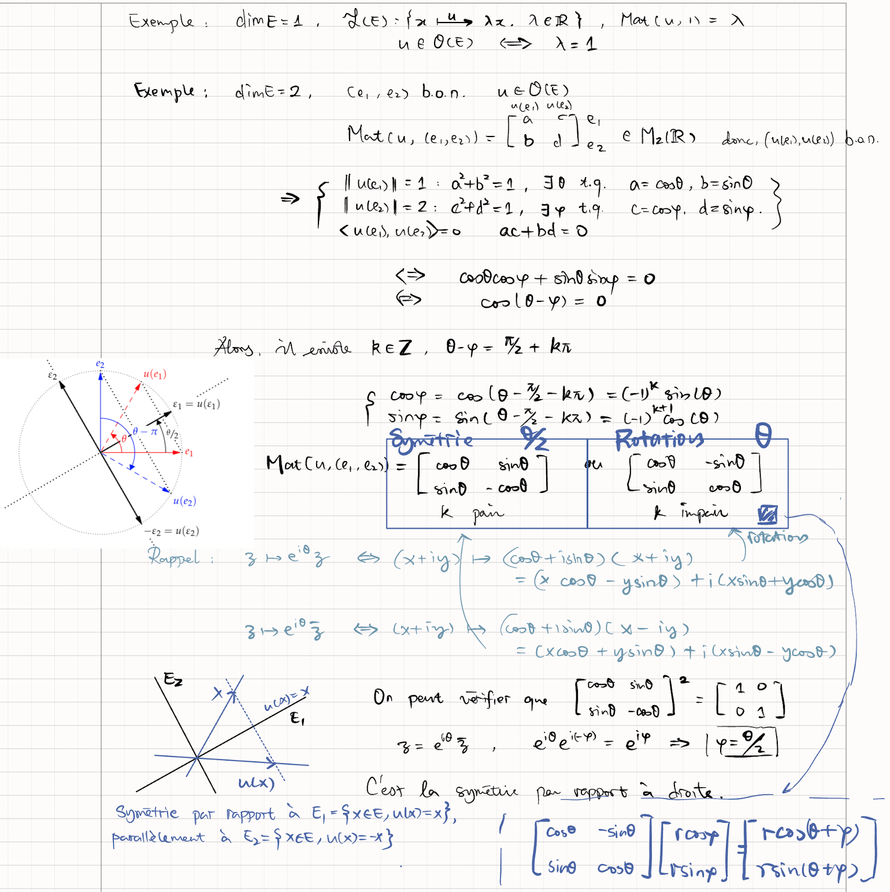

Endomorphismes
Notations :
-
\(E\) est un espace vectoriel euclidien de dimension \(n\).
-
\(\mathscr E = (e_1,\cdots, e_n)\), \(\mathscr B=(b_1,\cdots, b_n)\) deux bases orthonormées de \(E\).
-
\(x = \sum_{i=1}^n x_i e_n\), \(\mathrm{Mat} (x, \mathscr{E} )= \begin{bmatrix} <x,e_1> \\ \vdots\\ <x,e_n> \end{bmatrix}\)
-
\(P_{\mathscr B}^{\mathscr E}\) le matrice de passage d'une matrice muni d'une base \(\mathscr E\) dans celle d'une base \(\mathscr B\).
-
\(\mathscr F=(f_1,\cdots,f_n)\) une base quelconque de \(E\).
-
\(\phi:(x,y) \mapsto <x,y>\) le produit scalaire de \(E\)
-
\(\Phi=\mathrm{Mat}_\mathscr{F}(\phi)= [\phi(f_i,f_j)]_{(i,j)\in [\![1,n]\!]}\in \mathrm{S}_n(\mathbb R)\) la matrice de \(\phi\) dans la base \(\mathscr F\).
Démonstration :
Résumé
-
\[ x\in E \iff \begin{cases}\mathrm{Mat}_{\mathscr E}(x) = [<e_i,x>]_i\in \mathrm{M}_{m,1}\\\mathrm{Mat}_{\mathscr{B}}(x) = \;^tP_{\mathscr E}^\mathscr B\cdot \mathrm{Mat}_\mathscr E(x)\end{cases} \]
-
\[ u \in \mathscr{L}(E) \iff \begin{cases}\mathrm{Mat}_\mathscr E(u) = [<e_i,u(e_j)>]_{(i,j)} \\ \mathrm{Mat}_\mathscr B(u) = \;^tP_\mathscr{E}^{\mathscr{B}}.\mathrm{Mat}_\mathscr{E}(u).P_\mathscr E^\mathscr B\\ \boxed{\mathrm{Mat}_\mathscr E(u^\star)=\;^t\mathrm{Mat}_\mathscr E(u)}\end{cases} \]
-
\[ u \in \mathscr S(E) \iff \begin{cases} \;^t\mathrm{Mat}_\mathscr E(u) = \mathrm{Mat}_\mathscr E(u)\\\mathrm{Mat}_\mathscr E(u) \in \mathrm{S}_n(\mathbb R)\end{cases} \]
-
\[ u \in \mathscr O(E) \iff \begin{cases} \;^t\mathrm{Mat}_\mathscr E(u) =( \mathrm{Mat}_\mathscr E(u))^{-1}\\\mathrm{Mat}_\mathscr E(u) \in \mathrm{O}_n(\mathbb R)\end{cases} \]
-
\[ u \in \mathscr A(E) \iff \begin{cases} \;^t\mathrm{Mat}_\mathscr E(u) =- \mathrm{Mat}_\mathscr E(u)\\\mathrm{Mat}_\mathscr E(u) \in \mathrm{A}_n(\mathbb R)\end{cases} \]
-
Si on a le choix de la base dans un espace euclidien, on choisit prequement toujours de travailler en base orthonormée !
Endomorphismes auto-ajoints
-
\(f\) est auto-adjoint ou symétrique si
-
On note en même temps,
-
Exemples :
-
Les projecteurs orthogonaux sont les projecteurs auto-adjoints.
-
Si \(\exists \; \mathscr E, \; \exists \Lambda = (\lambda_1,\cdots,\lambda_n) \in \mathbb R^n\), tel que : Alors, \(f\) est auto-adjoint.
-
-
\(f\) est un endomorphismes auto-adjoint positif s'il vérfie de plus Version Matricielle :
- \(f\) est un endomorphismes auto-adjoint définis positif s'il vérfie de plus
Version Matricielle :
- Remarque :
-
Propriétés :
-
Si \(n = \dim E\),
-
Pour n'import quelle \(f\), De plus,
Preuve :
- Pour n'import quelle \(f\),
-
Théorème de réduction des endomorphismes auto-adjointes
-
Énoncé :
-
Verison Matricielle :
-
Remarque :
-
Remarque :
-
Proposition : Soit \(f\in \mathscr S^ +(E)\), alors :
{kind=link}
{kind=link}
{kind=link}
Automorphismes Orthogonaux
- \(f \in \mathscr{GL}(E)\) est appellée automorphisme orthogonal si elle vérifie :
-
\(f\in \mathscr{GL}(E)\) est appellée isométrie si :
-
Automorphisme Orthogonale \(\iff\) Isométrie.
-
Déterminant d'une matrice orthogonale : > Preuve : \(\det(u)^2 = \det(u) \times \det(u^\star) = \det(u \times u^\star) = \det(\mathrm{id}_E)\)
-
Exemple : une matrice orthogonale
-
Propriétés : Équivalence de
- \(f\in \mathscr O(E)\)
- \(\forall x\in E, \;||f(x)||=||x||\)
- \(\forall(x,y)\in E ^ 2,\; <f(x),f(y) = <x,y>\)
- \(\exists \text{ et } \forall \mathscr E\) t.q.
-
Propriétés : Équivalance de
- \(M \in O(E)\)
- Les vecteurs colonnes de \(M\) forment une base orthonormale de \(M_{n,1}(\mathbb{R} )\).
- \(M\) est la matrice de passage entre deux bases orthonormales de \(\mathbb{R}^n\).
Preuve :
-
Propriétés : Équivalence de
- \(M \in O_n(\mathbb{R} )\)
- \(\forall (X,Y) \in M_{n,1}(\mathbb{R})^2,\; ^t(MX)(MY) = \;^tXY\)
-
On appelle symétrie orthogonale tout élément de
- Son projecteur associé est \(s = 2p-\mathrm{id}_E\) est un projecteur orthogonale.
-
Interprétation géométrique de la matrice orthogonale :
-
On appelle rotation de \(E\) :
-
On appelle réflexion de \(E\) :
-
C'est une symétrie orthogonale de \(E_1\), l'hyperplan sur lequelle une projection orthogonale. \(E_1\) est définie par
- On a aussi le droite représenté par \(\mathrm{Ker}(u+\mathrm{id}_E)\)
-
-
Exemple de dimension 2 : 
-
Exemple de dimension 3 :
-
Décomposition d'un automorphisme orthogonaux en un produit de réflexions
-
Soit \(f\in \mathscr{O}(E)\),
-
Forme Canonique des automorphismes orthogonaux :
{kind=link}
Endomorphismes Antisymétriques
-
On dit que \(f\) est anti-symétrique s'il vérifie
-
Propriétés :
- Décomposition en somme directe
- Dimension :
-
Propriété :
-
Forme Canonique d'un endomorphisme anti-symétrique :
-
Propriétés : Dans \(E= \mathbb R^ 3\), pour toutes les \(f \in \mathscr{A}(\mathbb{R} ^3)\), alors il existe un unique \(\underline w\in \mathbb{R} ^3\). et on peut trouver une b.o.n. telle que Sa forme canonique basée sur \((c_1,c_2,c_3)\) est associé à \(w= pc_1+qc_2+rc_3\).
{kind=link}
Décompositions
Décomposition Polaire
-
Soit \(f \in \mathscr{GL}(E)\),
-
Trouver le racine de \(\;^tA.A\) demande de savoir trouver une base du théorème spectral, donc en général :
- impossible de faire le calcul exact
- difficile de faire le calcul numérique
-
{kind=link}
Décomposition de Cholesky
-
Si \(A \in \mathrm{S}_n^{++}(\mathbb R)\), il existe une unique matrice \(T\in \mathrm{T}_n^+ \cap \mathrm{GL}_n(\mathbb R)\) à coefficients diagonaux \(>0\) tel que :
-
En ce cas, \(AX = Y \iff \begin{cases} \;^tT.Z = Y\\ T.X = Z\end{cases}\)
Démonstration :
Analyse : Soit \(u \in \mathscr{S}^{++}(\mathbb R^n)\), \(A = \mathrm{Mat}(u, \mathscr C)\), l'orthomalisation de Gram-Schimidt appliqué à \(\mathscr{B}=(b_1, \cdots, b_n)\) donne \(\mathscr{E} = (e_1,\cdots, e_n)\). On trouvera On sait que \(u \in \mathscr{S}^{++}\), donc \(\exists ! v\in \mathscr{S}^{++}\) tel que \(u=v \circ v\), en même temps \(<c_i,u(c_j)> = <v(c_i),v(c_j)>\)
Synthèse : (1) Existence : \(T = [<e_i,b_j>]\), où \((e_1,\cdots,e_n)\) orthonormée de \((b_1, \cdots,b_n)\) bien suffit. (2) Unicité : Si \(A = \;^tT_1.T_1 = \;^tT_2.T_2\), donc \(\Delta=T_1.T_2^{-1} = \;^tT_1^{-1}.^tT_2\), appartient respectivement à \(\mathrm{T}^+\) et \(\mathrm{T}^-\). Dsonc \(\Delta\) est diagonale. Or, Cela implique que \(\Delta = \mathrm{id}_E\).
- Outile théorique / pratique.
Décomposition QR
-
Soit \(A \in \mathrm{GL}_n(\mathbb R)\), il existe une unique \((O,T)\in (\mathrm O_n(\mathbb R),\mathrm T_n^+(\mathbb{R}))\), tel que :
-
Si on veut résoudre \(AX = B\), cela devient \(O.T.X=B\), ensuite car \(^tO=O^{-1}\)
{kind=link}
Matrice de Gram
-
Soit \(E\) un espace préhilbertien réel, et \(\mathscr X=(x_1,\cdots,x_n)\) une famille finie de vecteurs de \(E\). On appelle matrice de Gram de \(\mathscr X\) la matrice
-
\(G_\mathscr X \in \mathrm{S}_n^+(\mathbb R)\).
Preuve : Soit \(X_a = \;^t[a_1,\cdots,a_n]\) avec la base \((e_1,\cdots,e_n)\)
-
\(G_\mathscr X \in \mathrm S_n^{++}(\mathbb R) \iff [(x_1,\cdots,x_n) \text { indépendants} ]\)
- C'est équivalent de dire \(G_\mathscr X\) est de plus inversible.
-
Plus précisément,
-
Application : Pour montrer que \((x_1,\cdots,x_n)\) indépendants ou non, il faut et il suffit de calculer \(\(\det(G_\mathscr X)\)\)
-
Soit \(E\) préhilbertien réel, \(\mathscr X = (x_1,\cdots, x_n)\in E^n\), on appellera volume de l'objet construit sur \((x_1,\cdots,x_p)\) :